Photo credits
Event photos come from Wikimedia Commons and are used under the licences below. Each was resized and cropped to 16:9; adapted versions of CC BY-SA photos are shared under the same licence. Events on this site are fictional demos and aren't connected to the places or people pictured.
-
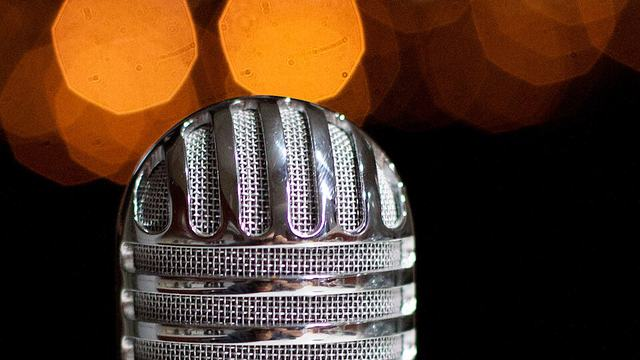
Comedy Audio Bokeh (15406399873).jpg by cogdogblog · CC BY 2.0 -
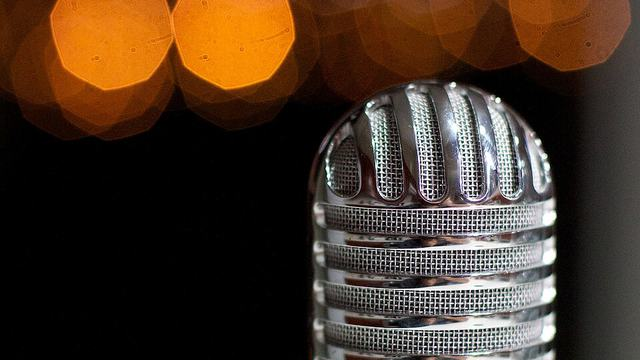
Comedy Bokeh Notes (16026032225).jpg by cogdogblog · CC BY 2.0 -
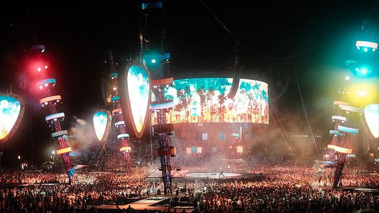
-
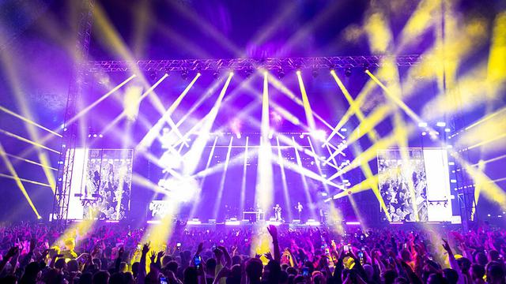
Concert Beach-Please-2022-crowd-stage-lights-night-performance.jpg by PinkBeachPlanet · CC BY-SA 4.0 -
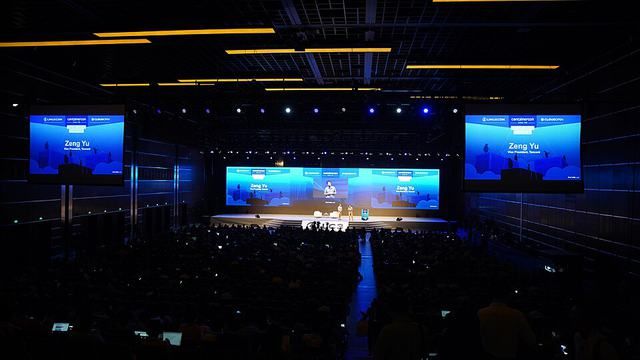
Conference Lc3 2018 (263681503).jpeg by Lf Asia · CC BY 3.0 -
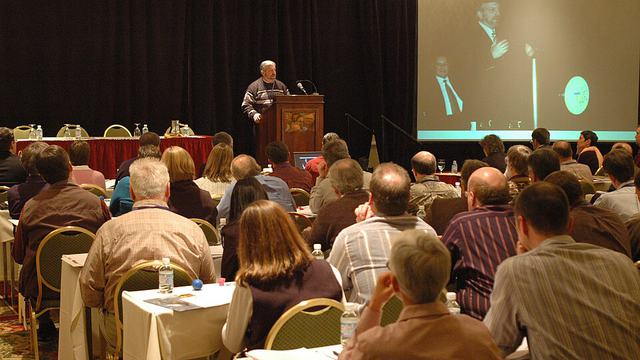
Conference Dale Hall speaking at the Region 3 Project Leaders Conference - DPLA - 29ae4e05eb59cc5842a239de808bc8c7.jpg by Department of the Interior. U.S. Fish and Wildlife Service. National Conservation Training Center. 10/1997-8888 · Public domain -
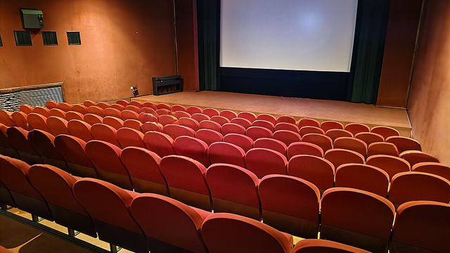
Movie Kino Atlas Interier J.jpg by Mojmir Churavy · CC0 -
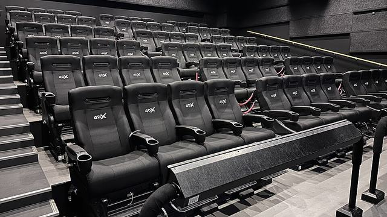
-
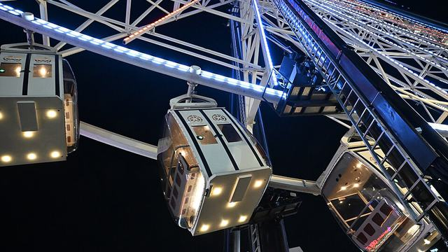
-
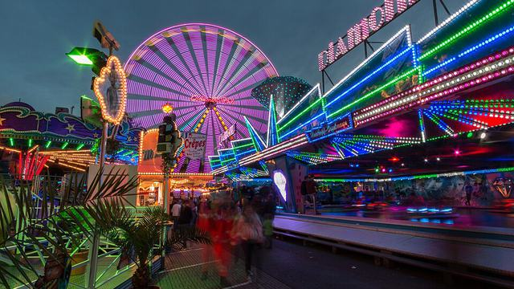
Other Dülmen, Viktorkirmes auf dem Overbergplatz -- 2014 -- 3726.jpg by Dietmar Rabich · CC BY-SA 4.0 -
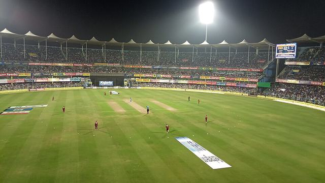
Sports Barsapara Cricket Stadium match under floodlights.jpg by Javs1233 · CC BY-SA 4.0 -
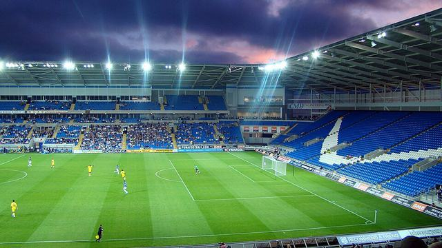
Sports Night begins to fall over Cardiff City Stadium.jpg by Jon Candy · CC BY-SA 2.0 -
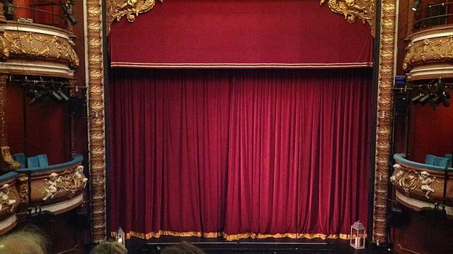
Theatre Harrogate Theatre pit and curtain.jpg by Celia Perry · Public domain -
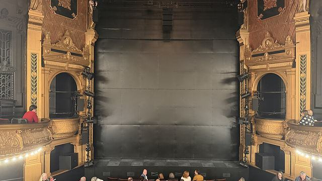
Theatre Citizens Theatre Glasgow stage 2026.jpg by Microchip08 · CC BY 4.0